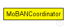
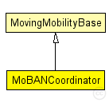

This documentation is released under the Creative Commons license
This documentation is released under the Creative Commons licenseThis is the coordinator module of the MoBAN mobility model. It should be instantiated in the top level simulation network in MiXiM, once per WBAN. The coordinator module is the main module that provides the group mobility and correlation between nodes in a WBAN. In the initialization phase, it reads three user defined input files which are the postures specification file, a configuration file which includes all required parameter for specific distributions, and the previously logged mobility pattern, if it is requested to use a logged pattern. Note that all WBAN instances may use the same input files if they are exactly in the same situation.
After the initialization phase, the MoBAN coordinator decides about the posture and the position of the Logical center of the group (WBAN). The absolute position of the reference point of each belonging node is calculated by adding the current position of the logical center by the reference point of that node in the selected posture. The coordinator publish the position of the reference point as well as the speed and the radius of the local movement of nodes.
The following diagram shows usage relationships between types. Unresolved types are missing from the diagram. Click here to see the full picture.
The following diagram shows inheritance relationships for this type. Unresolved types are missing from the diagram. Click here to see the full picture.
| Name | Type | Description |
|---|---|---|
| MovingMobilityBase | simple module |
Abstract base module for mobility models. |
| Name | Type | Default value | Description |
|---|---|---|---|
| debug | bool | false | |
| constraintAreaMinX | double | -1m/0 |
min x position of the constraint area, unconstrained by default (negative infinity) |
| constraintAreaMinY | double | -1m/0 |
min y position of the constraint area, unconstrained by default (negative infinity) |
| constraintAreaMinZ | double | -1m/0 |
min z position of the constraint area, unconstrained by default (negative infinity) |
| constraintAreaMaxX | double | 1m/0 |
max x position of the constraint area, unconstrained by default (positive infinity) |
| constraintAreaMaxY | double | 1m/0 |
max y position of the constraint area, unconstrained by default (positive infinity) |
| constraintAreaMaxZ | double | 1m/0 |
max z position of the constraint area, unconstrained by default (positive infinity) |
| updateInterval | double | 0.1s |
the simulation time interval used to regularly signal mobility state changes and update the display |
| postureSpecFile | xml |
The input file that includes the specification of all postures |
|
| configFile | xml |
The configuration file for setting probability vectors, distributions and correlations |
|
| useMobilityPattern | bool |
Set if the logged mobility pattern is used. |
|
| mobilityPatternFile | string |
The input file for mobility pattern if it is going to be used. |
| Name | Value | Description |
|---|---|---|
| display | i=block/cogwheel | |
| class | MoBANCoordinator |
// This is the coordinator module of the MoBAN mobility model. It should be instantiated in the top level simulation network in MiXiM, once per WBAN. // The coordinator module is the main module that provides the group mobility and correlation between nodes in a WBAN. // In the initialization phase, it reads three user defined input files which are the postures specification file, a configuration file which includes all // required parameter for specific distributions, and the previously logged mobility pattern, if it is requested to use a logged pattern. // Note that all WBAN instances may use the same input files if they are exactly in the same situation. // // After the initialization phase, the MoBAN coordinator decides about the posture and the position of the Logical center of the group (WBAN). // The absolute position of the reference point of each belonging node is calculated by adding the current position of the logical center // by the reference point of that node in the selected posture. The coordinator publish the position of the reference point as well as // the speed and the radius of the local movement of nodes. simple MoBANCoordinator extends MovingMobilityBase { parameters: xml postureSpecFile; // The input file that includes the specification of all postures xml configFile; // The configuration file for setting probability vectors, distributions and correlations bool useMobilityPattern; // Set if the logged mobility pattern is used. string mobilityPatternFile; // The input file for mobility pattern if it is going to be used. @class(MoBANCoordinator); }
This documentation is released under the Creative Commons license